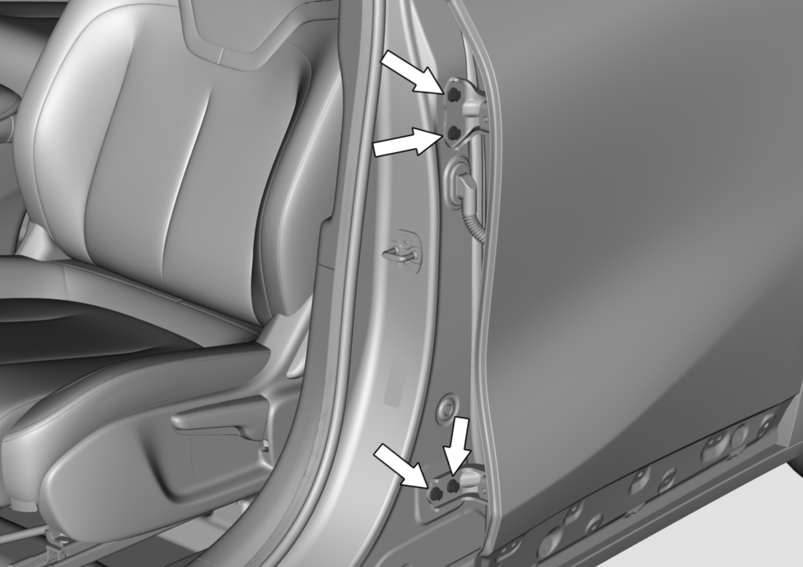

调整后车门
注意
1、调整后车门时，车辆必须静止停放在水平地面上，
2、在一位装配工的协助下进行调整。
1、使用13号套筒旋转（无需旋出）图中箭头处后车门铰链（车门处）固定螺栓，对后门进行调整。螺栓拧紧力矩：33±3N·m。

注意
1、如果后车门处于关闭状态时各处的间隙尺寸都是均匀的，没有向内凹或向外凸而且轮廓对齐，即说明后车门已正确调整好。
2、按照上述步骤，如果没有达到调整效果，可参考下列步骤进行下一步调整
2、使用10号套筒旋出图中箭头处后车门限位器（侧围处）固定螺栓。

螺栓拧紧力矩：23±3N·m
3、使用13号套筒旋转（无需旋出）后车门上铰链（侧围处）和下铰链固定螺栓，对后门进行调整。
螺栓拧紧力矩：33±3N·m
